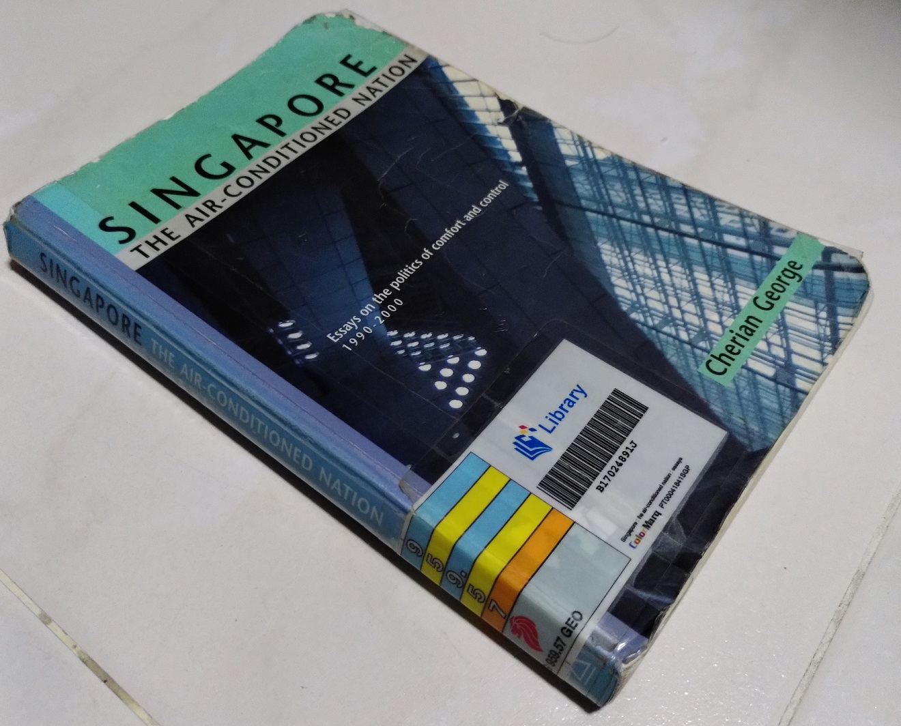

I have heard of this term “air-conditioned nation” for more than a decade but I never actually read the book where this term originated from. Now, I finally did.
The “Singapore: The Air Conditioned Nation” book was initially published in 2000 by the academic Cherian George (CG). Over the span of 20 years, he published 3 books.
- Singapore: The Air-conditioned Nation Essays on the politics of comfort and control (2000)
- Singapore, Incomplete: Reflections on a First World nation’s arrested political development (2017)
- Air-Conditioned Nation Revisited: Essays on Singapore Politics (2020)
Each of these books hold a collection of none-linear essays written by CG.
Given the length of all 3 books and some reviews have already been published by much more qualified people, I shall selectively pick out certain points which I felt impacted me the most.
This is the review of the first book with the subsequent books to follow in more posts.
Singapore: The Air-conditioned Nation (2000)
The book that started it all. This book was published at the turn of the millennium so obviously its content will be about events and thoughts that happened before. Nevertheless, there are some lessons that I believed have aged very well and are still very relevant today some 2 decades later.
The Politics of an Air-conditioned Nation
This first chapter introduces the origin of the term Air-conditioned Nation which will set the stage for title of the books and the expectations of the reader. I’ll therefore go into more detail into this section.
…when the Wall Street Journal asked several 20th century luminaries to pick the most influential invention of the millennium, Lee (Kuan Yew) named the air-conditioner. “The humble air-conditioner has changed the lives of people in the tropical regions ….
Before air-con, mental concentration and with it the quality of work deteriorated as the day got hotter and more humid… Historically, advanced civilisations have flourished in the cooler climates…
I can somewhat agree with this. Heat and humidity tends not to bring out the best in some people. CG would state the context as LKY being used to the climate of England where he studied in.
Political scientists and commentators have given the country various labels ranging from an authoritarian democracy to a benevolent dictatorship. Each of these terms is intellectually defensible in its own way, but they are also laden with so much baggage that they tend to provoke knee-jerk reactions, more than they evoke reflection.
So, think of Singapore instead as the Air Conditioned Nation — a society with a unique blend of comfort and central control, where people have mastered their environment, but at the cost of individual autonomy, and at the risk of unsustainability.
Air-con is a selfish technology as it creates a heat gradient. Air-con also work more efficiently if there is a central control. Applying the concept to SG:
Similarly, like any rich capitalist state, Singapore’s comfort depends partly on effective insulation, to ensure that the wealth gradient is not flattened by the socialist impulse to equalise outcomes. … Comfort is achieved through control.
I quite like this quote. Many a times when people use terms like authoritarianism or dynastic politics to describe SG, it invokes a lot of argument that distracts from the context of when these terms are used. Describing SG as an air-con nation sounds like a new term I should add to my vocabulary whenever I need to describe SG next time.
OB Markers and the Rules of Political Engagement
Out-of-bound (OB) markers is a term sometimes used in the SG political scene. Political participants or commentators have to be careful not to overstep these unwritten and sometimes shifting boundaries. Oftentimes, the only way to know where these boundaries lie is to bump up or accidentally overstep them.
In the name of protecting the political process, it (PAP) dictated the terms of permissible engagement. If you were “political”, tougher rules applied.
CG would cite the example of writer Catherine Lim who wrote an article for The Straits Times The PAP and the people - A Great Affective Divide in 1994. Apparently that article ruffled some feathers among the senior leadership earning her some stern words.
Singapore’s political sterility is probably the main reason the PAP’s chronic inability to attract enough able Singaporeans into Parliament and government. In most countries, politicians arise naturally from the ground up, usually involving themselves first in student politics and then in various political organisations.
I’m amazed this statement made 20 years ago is still as relevant as it is today! Even in this recently concluded GE2020, we have Hwa Chong Institution telling students not to discuss their views on national issues on social media.
The PAP has stifled these opportunities for lower-level political growth. It is little wonder that the successful Singaporeans who would make able leaders are reluctant politicians, and the government has had to throw more and more money at the problem of political recruitment.
As probably one solution to this issue, many of the PAP MPs and ministers seem to have been parachuted from their former backgrounds in the military, civil service and GLCs as I guess they are unlikely to “say no”. Not to say these people are unqualified for office, it’s just that more diversity will always be better.
The high salaries have been cited as needed to attract talent to join our nation’s governing body. Well I don’t disagree with paying our leaders a reasonably good pay for their responsibilities, paying excessively high salaries seems not to be the solving the root of the problem. Thanks to this point, I understand that money is the second-best solution, due to whatever reasons, they are reluctant to solve the issue of low-level political growth.
Riding the Tiger Again: This time, will the PAP pay?
I first heard about the phrase “riding the tiger” was in the context of LKY partnering with the Communists as a means to gathering support to get into power and independence.
In this chapter’s context, the next tiger is that of business interests.
Politicians and and businessmen began travelling together on investment missions abroad. Some MPs were business leaders themselves.
Well to me, I actually have no objections to this as long as social interests are also not forgotten. It’s important for political leaders to be in touch with business needs in order to further the economy.
The emphasis of this chapter quickly pivoted to elected office-holders and the elite officers of the public service.
Never having been tested in the private sector, they can only take the government’s word that they (the scholars) would excel in practically any field and therefore deserve top dollar. Political office-holders at least have elections… The scholar mandarins, on the other hand, function in an increasingly rarified environment from their late teens. There is a danger that by the time these individuals reach highly influential positions, some will imagine themselves as god’s gift to Singapore.
CG does not seem to quote any evidence of this “danger” but I do recognise where he is coming from. I feel it’s not really right for people elevated to the one of the highest levels of policy-making despite having never been exposed to the world outside of the civil service.
From Hero to Zero: How the SDP squandered its seats?
In GE1991, the SDP won 3 seats only to lose 2 of them in the next GE1997.
Conventional wisdom has it that Chee Soon Juan was the powder keg that caused the SDP to break up.
That was what my impression was as well and I guess it’s shared by many Singaporeans. However, CG’s section here actually gave me an additional point of view that the situation wasn’t that simple.
Internal differences were simmering before Chee appeared, and probably would have boiled over even without him. The party’s problems had more to do with its leaders’ inability to manage its own growth and success.
Although this is CG’s opinion, that possibility is certainly a revelation to me! I admit I have never read in depth into how Chiam See Tong got ousted as SDP’s leader beyond the basics.
CG’s provides evidence like Chiam’s intolerable leadership style and spread of party resources to manage 2 more new town councils.
The dilemma - one of many confronting Singapore’s intrepid opposition - is how to attract new members, and at the same time maintain control. The trade-off and risks became especially great when an opposition leader finally gains a coveted parliamentary seat. A politician in that situation is torn between securing his position, and taking the chances required to win more seats for his party colleagues.
Note that this was written way before Low Thia Khiang would leave Hougang to help his Aljunied colleagues win in GE2011. Chiam See Tong did the same but failed to win Bishan–Toa Payoh GRC. It shows that taking such a chance poses a very real justifiable risk. Further evidence to CG’s assertion some 11 years after he first made it.
Reading this section actually made by day and I would have read this book just on the strength of this section alone!
Chee’s Confrontational Opposition
Chee’s confrontational antics during the era of the 1990s is famous enough that I shall not repeat it. However, the following description by CG still holds very true today.
…a new and inexperienced PAP candidate has an easier ride. He is cushioned by the ruling party’s institutional support, and faces a press predisposed to treating him with kid gloves. While an opposition member’s every move is dissected and held against him in the interest of keeping politics honest, the PAP candidate is spared any probing by the media, on the grounds that a loss of privacy and face would deter good men from stepping forward to serve.
Except there is huge difference between today and in the 1990s where internet penetration was way lower much less the existence of social media. Today, this same dissection now applies to PAP candidates even if the traditional media does not do it.
It Came, It Saw, It Co-opted, the PAP and the Intelligentsia
This section details the difficulties faced by the opposition in gathering talent as well as the PAP absorbing people into the establishment for those who will mostly likely join them.
Many regimes are for repressive than Singapore but their oppositions have no difficulty finding members…. the PAP’s success in courting and co-opting the same kinds if individuals that the opposition cause is desperate for - “serious men with serious purpose”
CG’s quotes people like David Marshall, Tommy Koh, Chan Heng Chee and Ho Kwon Ping. They are famous names today and I did not realise that they were more “radical” in their younger days until they were co-opted.
The Nominated Member of Parliament (NMP) scheme was also another means to bring in people who want to raise an alternative view without having to join a party.
… NMPs’ cost to the PAP is far less than the loss to the opposition.
What Community Unites, Partisan Politics Unties
This is another section that is still relevant today.
Community Development Councils (CDC) would be led by men and women elected by the residents (MPs). Not so in constituencies where MPs belonged to the opposition….The (opposition) MPs would not get to disburse CDC funds. CDC functions were government functions, the PAP said.
…
The old joke is that residents of opposition wards effectively have two MPs working for them - their opposition MP and the local PAP representative - each eager to prove his devotion to the people.
…
CDCs enjoy such a strong backing that they practically cannot fail. They have a PM personally committed to their success, the patronage and guidance of cabinet ministers in their area, and a full-time staff from the People’s Association.
The use of taxpayers money for partisan purposes is to me extremely distasteful and divisive.
Conclusion
I mentioned several times throughout this post that the points CG raised 20 years ago are still very relevant now. In fact, this book can pass off as something that is written today! To me this is actually a bad thing, it shows the Singapore politics has hardly matured despite this long passage of time.
With the Workers Party holding a record (but still small) 10 seats for the opposition in GE2020, I hope our local political scene can start maturing further.
Continue on to Part 2 Singapore, Incomplete: Reflections on a First World nation’s arrested political development (2017).


{kind=link}